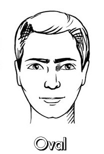

Oval Face Features
Oval faces have balanced proportions. They are longer than they are wide, with a gently rounded chin and forehead.

Best Sunglasses Styles
Almost any style works, as Diamond is a very balanced face shape.
Why They Suit Oval Faces
They maintain the face's natural balance and don't add harsh angles.